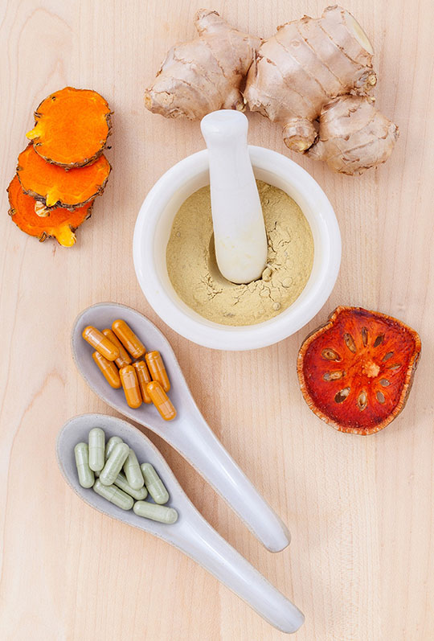

Wellness Enhancers
What products do we offer? Here are just three of the many Wellness Enhancers at your disposal as a member of Giza Wellness.
- Rejuvenation Crystals
- Going to get a cavity filled? Who needs painkillers when you have your very own soothing Rejuvenation Crystals! Just rub these crystals on the painful area while contemplating the infinite- no need for that pesky anesthesiologist. Remember: if pain persists, you aren't rubbing hard enough.
- Essential Oils
- Say goodbye to vaccines! Our wide selection of oils will guard your body against toxins from within and without. Add an oil to your tea or bath and the oil's natural micro-ions will establish a natural balance of your humors. Doctor's visits will become a thing of the past!
- Spiritual Cleansing Beads
- Mental illness got you feeling down in the dumps? Flush your Xanax or Lithium and grab some of our Spiritual Cleansing Beads. Meditating while grasping these beads will help you achieve contentment while contemplating the infinite. You will forget your therapist's number in no time!
Powder and pills photo by kerdkanno at Pixabay.com